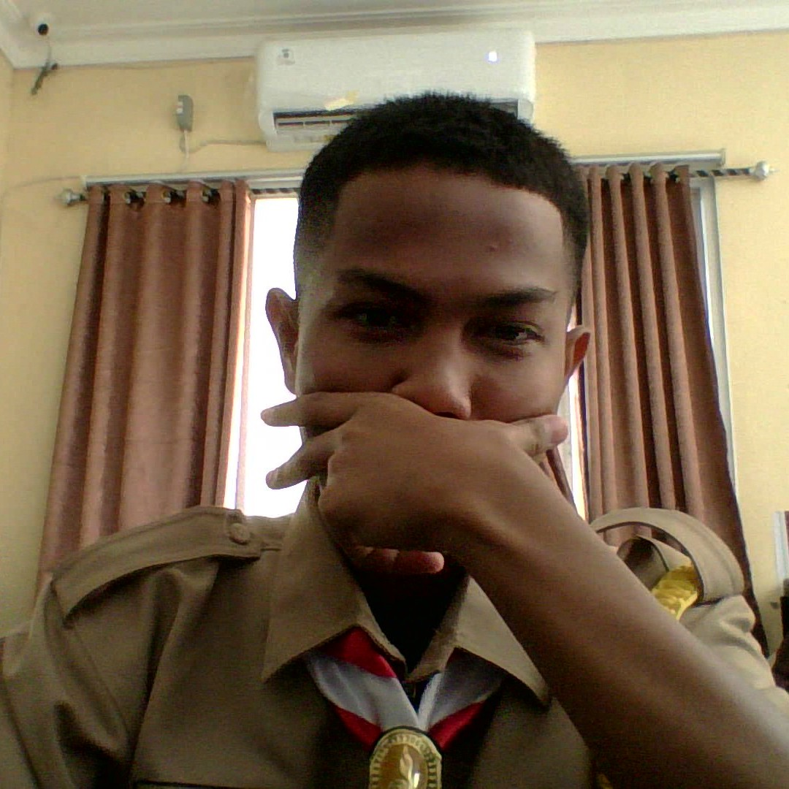

Profil Saya

Halo, saya Andri Aditya Pratama!
Saya adalah siswa kelas X RPL 1 di SMK Negeri 3 Sekayu. Saya memiliki minat dalam bidang teknologi, komputer, dan pengembangan website.
Saya ingin terus belajar dan mengembangkan kemampuan agar dapat menjadi seorang Web Developer yang kreatif dan bertanggung jawab.
Hobi Saya
Beberapa kegiatan yang saya sukai pada waktu luang:
- Mempelajari teknologi dan komputer
- Mendengarkan musik
- Membaca dan mencari informasi
- Berolahraga
Keterampilan
Keterampilan yang sedang saya pelajari:
- HTML untuk membuat struktur halaman website.
- CSS untuk mengatur warna, tata letak, dan tampilan website.
- Dasar JavaScript untuk membuat halaman lebih interaktif.
- Penggunaan Visual Studio Code sebagai teks editor.
Riwayat Pendidikan
| No. | Jenjang | Nama Sekolah | Tahun |
|---|---|---|---|
| 1 | SD | Nama Sekolah Dasar | Isi tahun |
| 2 | SMP | Nama Sekolah Menengah Pertama | Isi tahun |
| 3 | SMK | SMK Negeri 3 Sekayu | Isi tahun–sekarang |
Ganti nama sekolah dan tahun sesuai riwayat pendidikan sebenarnya.